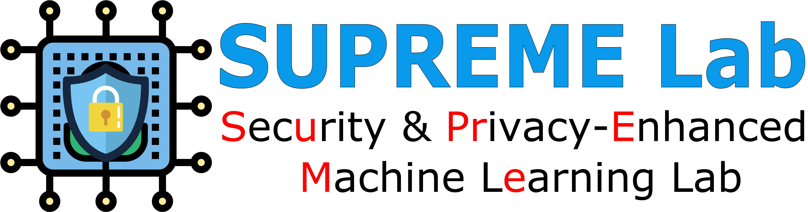

Research Assistant
August 2022 – Present
SUPREME Lab
- Conduct in-depth literature reviews to understand the prior arts
- Collaborate with researchers to design, develop, and optimize algorithms
- Collect and analyze data for experiments, simulations, and data-driven research projects
- Write and maintain code for research projects, including feature engineering, model evaluation, and optimization
- Work with models like Transformers (BERT, GPT), CNN, RNN, LSTM, YOLO, and traditional ML (KNN, K-means, Random Forest, Decision Tree, Boosting, Bagging)
- Write research papers collaboratively in Overleaf and prepare presentations for conferences and journals
- Assist in training and mentoring junior research assistants and undergraduate students
- Participate in online ML and NLP competitions (e.g. Kaggle)
- Led a team for the CyberForce'23 competition
